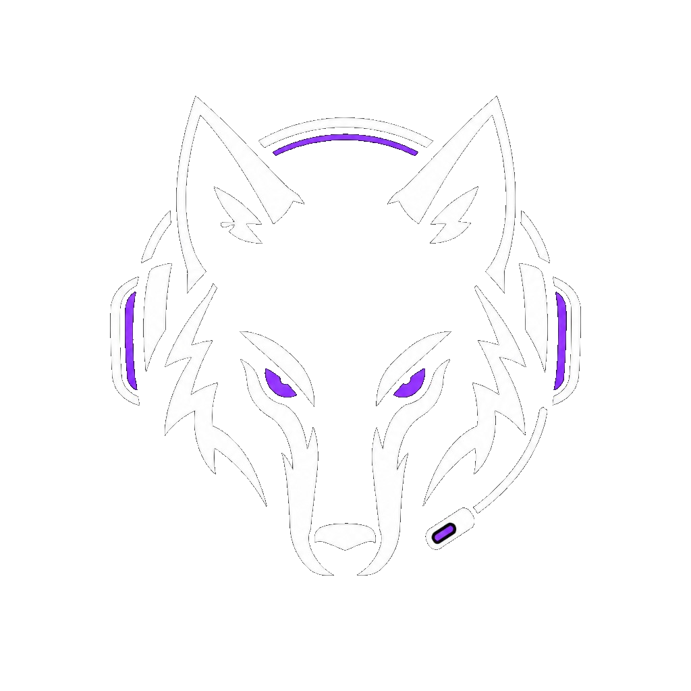
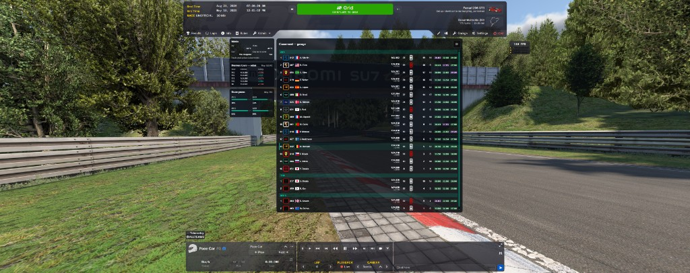
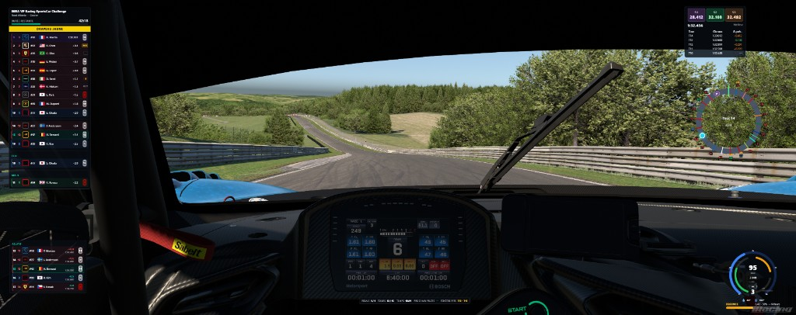
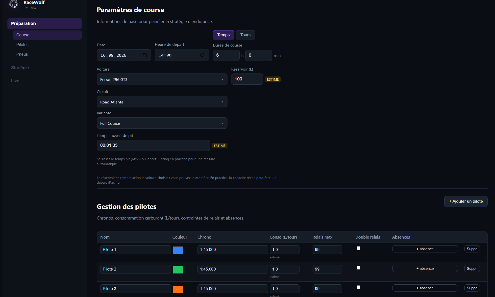
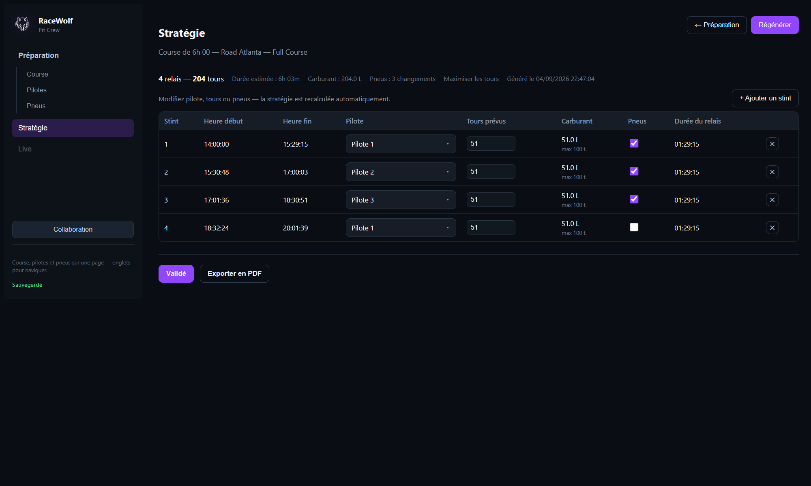

Overlay piste
Classement, relatif, secteurs, historique de tours, trackmap avec couronnes de leaders de catégorie, et ATH essence / vitesse / régime.

RaceWolf Beta TéléchargerPhase de test
L’application RaceWolf est actuellement en Beta. Toutes les fonctionnalités sont accessibles gratuitement pendant la phase de test.
Les utilisateurs Beta bénéficient d’un tarif fondateur lors du lancement officiel — merci de tester, casser et nous aider à améliorer le produit.
Modules RaceWolf
Classement, relatif, secteurs, historique de tours, trackmap avec couronnes de leaders de catégorie, et ATH essence / vitesse / régime.
Météo, usure pneus, derniers tours de relais et tableau complet dès que tu es aux stands ou dans le menu garage iRacing.
Prépare la course, les pilotes et les trains de pneus, génère la stratégie, puis suis le live pendant la séance.
Héberge ou rejoins avec un code. Ingé, pilote ou lecture seule — tout le monde voit le même plan.
À venir
Outils de diffusion : infos live, classements et contextes de course pensés pour le commentaire et le stream.
Prépare et compare tes réglages avant la séance, avec une lecture claire de ce qui compte vraiment sur le tour.
Revois la séance après le damier : relais, conso, écarts et points à retravailler pour la prochaine course.
ScreenShot




Ta voix compte
Tu testes RaceWolf en Beta : chaque retour nous aide. Décris ce que tu as vu, envoie une capture si possible, et indique ta version Windows et iRacing si tu signales un bug.
Windows 10 / 11
Fichier portable : double-clic, pas d’install. iRacing est nécessaire pour l’overlay live. Le mode démo et Pit Crew fonctionnent sans le sim.
Télécharger RaceWolf 0.5.0.exe portable, puis
lance-le.